WORKS
 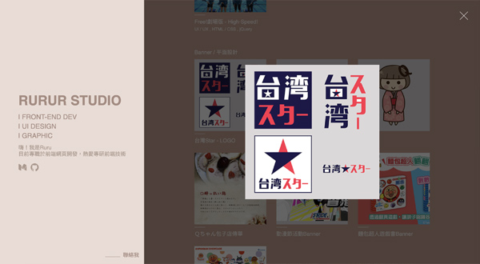
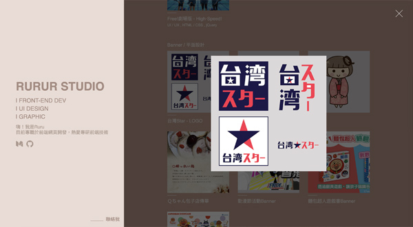

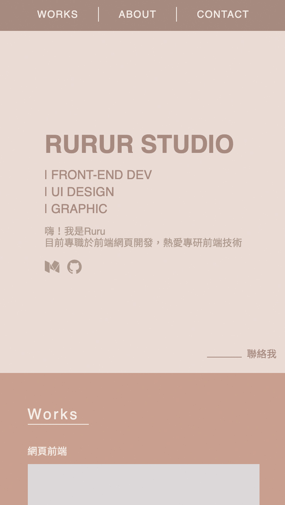

RURUR STUDIO
HTML / SCSS , jQuery , VUE
個人作品集網頁。VUE部分，是將部分資料做成資料陣列放在VUE裡，並將資料渲染於dom上。


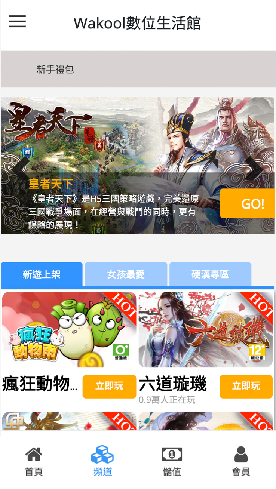
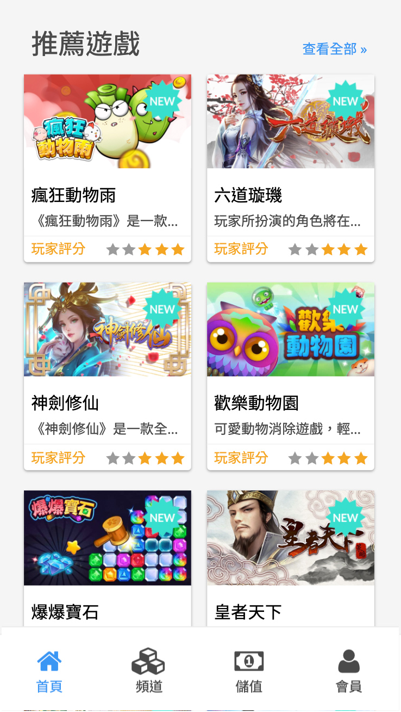
CTBC數位生活館
HTML / SCSS , jQuery , Ajax
使用Xtemplate引擎開發，我負責資料串接、RWD切版部分。結合小說、遊戲、算命等多元娛樂性質平台，尚未正式上線，目前僅提供小說觀看與遊戲功能。
 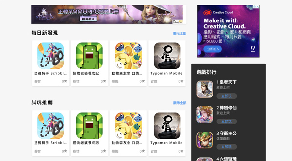
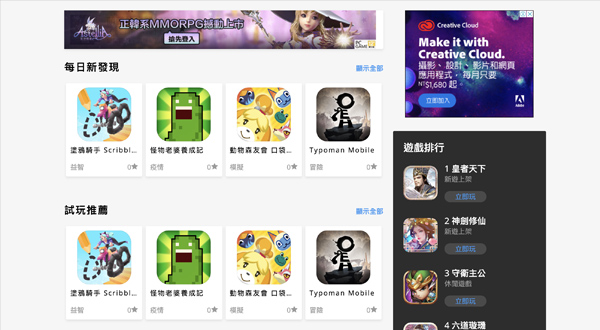


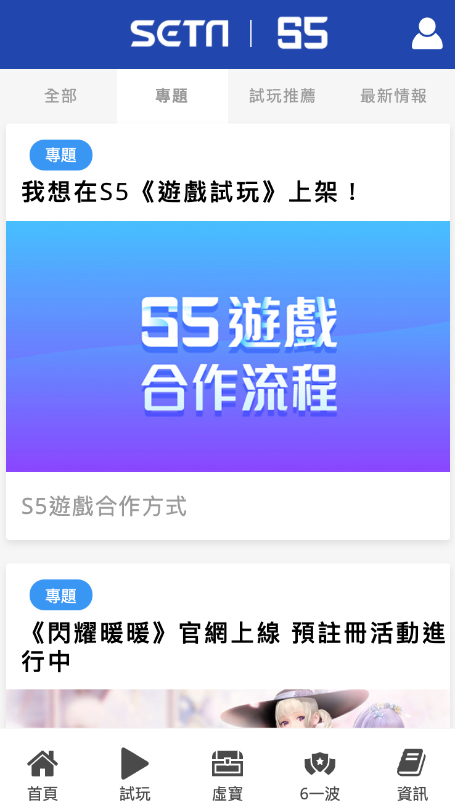
S5遊戲館
HTML / SCSS , jQuery
這是與三立新聞合作的遊戲平台。使用Xtemplate引擎開發，我負責RWD切版部分。
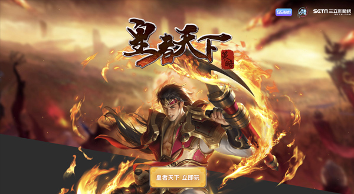


S5遊戲館 - 皇者天下活動
HTML / CSS , jQuery
遊戲活動頁都會與UI設計師討論網頁效果，讓版面不過於死板，這是其中一項專案。我總是樂意接受設計師給我的挑戰，讓我能嘗試各種的網頁效果。
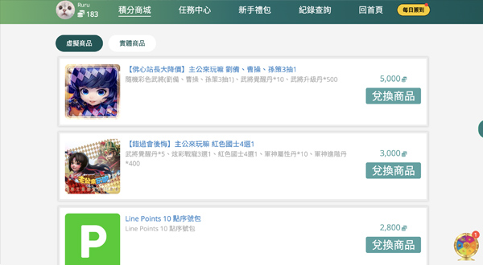


iplay遊戲館 - 福利中心
HTML / SCSS , jQuery , Ajax
建立於iplay遊戲官網裡的專案，主要功能是讓玩家能賺積分換獎勵，目前仍持續依需求增加功能或優化。
這是於異軍專案中，api串接技術最成熟的專案，在好幾次的串接工作後，對於程式邏輯已十分清晰，與後端溝通也流暢有默契。

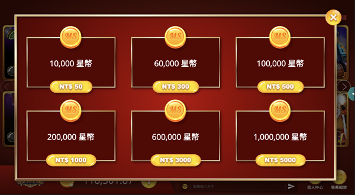
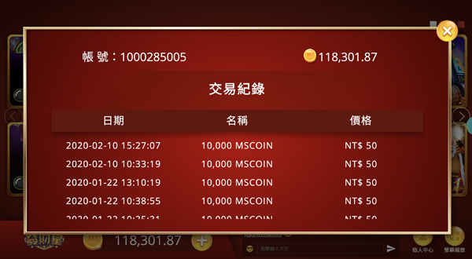
iplay遊戲館 - 發財星
HTML / SCSS , jQuery , Ajax
此專案網頁於手機上介面必須也為橫向，由於在此之前還未有手機橫向的RWD經驗，一開始會有切版上的難點，所幸找到解決的方法，順利完成橫向的網頁切版。


Ｑちゃん包子饅頭店
UI / UX , HTML / CSS , jQuery
在日本打工度假時期，幫親戚在東京的包子店所設計的形象網頁，從圖片素材、版面規劃及切版由我一手完成。
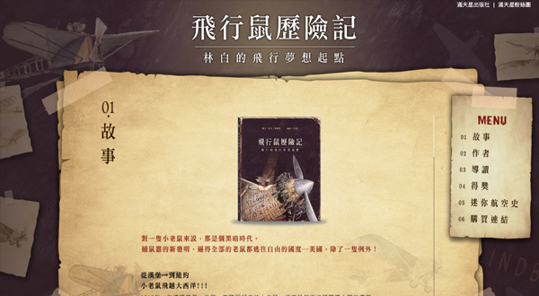